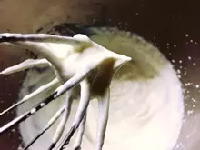

介紹
This page is an example of the plugin in action – the table of contents you see on the left (or top, on mobile) was automatically generated, without having to manually keep all of the navigation items in sync with the headings.
材料
- 酪梨
- 糖
- 檸檬汁
- 淡奶油
步驟
- 將淡奶油以量的多寡分成兩份。且將酪梨切成塊狀。
- 將 酪梨、糖、檸檬汁、少量的淡奶油放入果汁機，用低速打至糊狀 —— A。
- 將另一份淡奶油打發至濕性發泡 —— B。
- 將A材料、B材料混和。
- 倒入盒中，放到冷凍庫裡冰四小時以上。
將淡奶油以量的多寡分成兩份，且將酪梨切成塊狀。
將 酪梨、糖、檸檬汁、少量的淡奶油放入果汁機，用低速打至糊狀 —— A。

將另一份淡奶油打發至濕性發泡 —— B。
將A材料、B材料混和。
倒入盒中，放到冷凍庫裡冰四小時以上即完成。